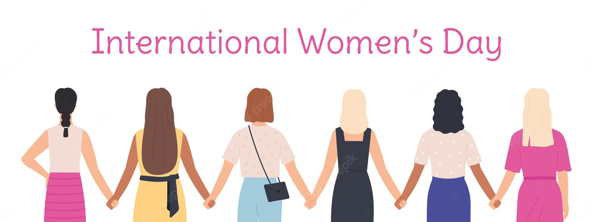

International women’s day March 8 is a day recognized across the globe for celebrating the economic, social, political and cultural achievements of women over the years. It also presents an opportunity for a call to action to promote equality of women across various spheres of life. A major aim of this day is to celebrate women while calling out all forms of inequality, in a bid to enhance a gender-equal world. This year, the theme is focused on breaking biases and stereotypes surrounding women. The theme #Breakthebias is relevant in the world today, taking cognizance of the various stereotypes inhibiting the progress of women in various parts of the world. In many countries, women are still excluded from the decision-making process and even in political and religious leaderships, for example, the world has witnessed the suppression and danger that women in Afghanistan have been exposed this year and this explains the extent to bias against has eaten into the world that we live in. This blog post will focus on prominent biases against women, especially within the workplace and also how we can also contribute to dismantling these biases. We must work together to ensure that we dismantle these biases on International Women’s Day (IWD) and beyond. In doing this the world will be a better place; making more informed, valuable decisions and celebrating the best talents with no form of exclusion based on gender.

Refusing to respect a woman in power because of a belief that she got there through favouritism.
A man never accepting a female boss or leader ‘Because she is a woman’ and women cannot be head over men.
Accusing women of being bossy when the same statement from a man is considered ‘Speaking like a leader’.
Claiming that men are more logical while women are more emotional when it comes to decision making.
Accusing women of being jealous of other women and that women do not support women.
Build workplaces and organizations that allow women to thrive and grow.
Elevate the visibility of women doing great work.
Forge women empowerment activities in organizations.
Celebrate the women making a change and creating impacts.
Celebrate women and their differences.
It is important to note that these biases may be conscious or unconscious, as a result of our socialization process. Every single human being has an unconscious bias. We are all fed stereotypes and these impact the decisions we make; whether they are everyday or important choices. Hence there is the need for us to recognize the negative effects of bias within our organizations, as well as the benefits to be realized by uncovering bias in decision-making processes. Being open to new knowledge and information helps to create a more diverse world that benefits everyone.